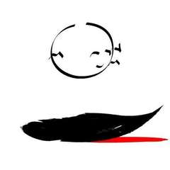
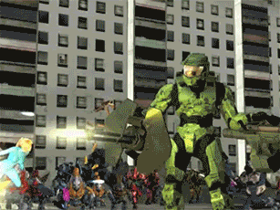
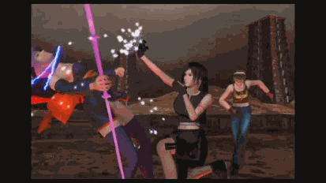
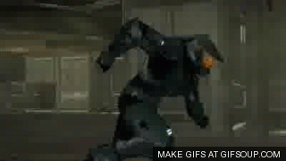
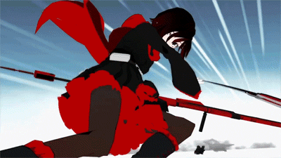

Short-Bio
Monyreak "Monty" Oum was born on June 22,1981 in Providence, Rhode Island. His family consists of: Mony Oum (father), Haruka Kashibuchi Oum (mother), Sheena Duquette (wife), brothers: Woody, Sey, Chivy and Neat, and two sisters: Thea and Theary. He is an American animator of “Cambodian, Vietnamse, Chinese, and Japanese” decent. Although a high school dropout, he used his time to teach himself animation where he created fighting-crossover videos such as Microsoft's Halo vs Nintendo's Samus (“Haloid”). Both franchises' characters are set in an outer space storyline, having their world collide blew the minds of fans!
Monty was known to be very time efficient and would usually sacrifice sleep to accomplish tasks which would worry his fans. Despite having many more projects and ideas in mind, Monty’s life ended at the early age of 33 on February 1, 2015 to an allergic reaction to a routine medical procedure. The loss of such an extraordinary animator extended beyond the Rooster Teeth fanbase because of his tremendous belief that if you work hard on something then it will show and it will be noticed.

Back to Top
Contributions to Society
His combat animation specialty caught the attention of Namco Bandai Games, where he worked as a combat designer and animator for “Afro Samurai.” However, because of the stressful and constraining environment of the gaming industry, Oum left Namco Bandai Games and joined Rooster Teeth after meeting up with the co-founder, Burnie Burns, in 2009. At Rooster Teeth, he worked as an animator and improved the fighting scenes of the company’s web series: “Red vs. Blue.” Later, Oum was given the opportunity by Rooster Teeth to work on and lead his own project called “RWBY,” an anime-like series about huntsmen and huntress with a mixture of folk-lore and fairytales.
Please see below for a preview of what Oum's works.
Works
"Haloid"
Oum felt that the fighting physics of today games could be better, so he reverse-engineered the codes for Halo and Metroid then added some Super Smash Brothers-like fighting physics with a bit of his touch.

"Dead Fantasy"
A subsequent series of Oum's works after Haloid. This time fans can fantasize what will happened if a fighting style game: Dead or Alive and a turn-based RPG: Final Fantasy, collided in the same realm or universe!

"Red v Blue"
Yes we did skip over "Afro Samurai." Monty's full potential was shown in Red vs Blue where he was able to add his thoughts on fighting styles in games/animation in this web series.

RWBY
Finally, the peak of Oum's career where he was able to lead his own series professionally. Because the main protagonists were mostly female going through the coming of age, many of Oum's fans were female.

Back to Top
References
“Monty Oum.” Wikipedia, Wikimedia Foundation, 24 Sept. 2017, en.wikipedia.org/wiki/Monty_Oum. Accessed 1 Oct. 2017.
To get an overview of Monty's life and some biographic information, Wikipedia is a good start.
Supports on what kind of personality Oum had such as considering himself being a dancer and wearing unique anime character style outfits.
An in depth summary of Monty's career. Readers can get a better understanding how why Monty left the gaming industry and stayed in the animation industry.
Solomon does another post reflecting on Monty's work in memory of him. This article includes links to the major works Monty completed or worked on.
Back to Top